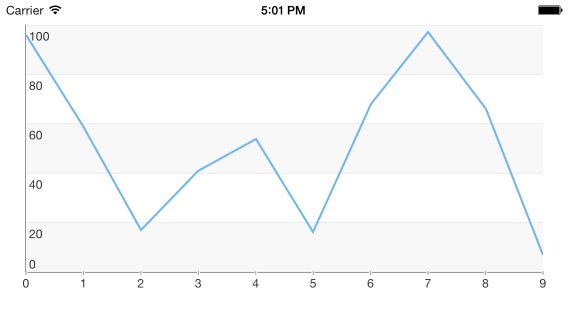

Chart: Getting Started
This quick start tutorial demonstrates how to create a simple iOS application with TKChart.

Prerequisites
This article assumes that you have followed the Downloading UI for iOS, Installing UI for iOS and Setting Up the project steps from the common Getting Started article.
Setting up TKChart
Now that our project is created and the TelerikUI.framework is added, we can start referencing and using the TelerikUI types:
Open your ViewController.m file and add a reference to the chart header file:
#import <TelerikUI/TelerikUI.h>
Note that starting with Xcode 6 Apple doesn’t generate the precompiled headers file automatically. That is why you should add import the UIKit framework before importing TelerikUI:
#import <UIKit/UIKit.h>
If you are writing Swift, add the same line in your bridging header.
If you are using Xamarin, add a reference to TelerikUI.dll in your project and use the using directive:
using TelerikUI;
Type the following code in viewDidLoad method:
Objective-C
TKChart *chart = [[TKChart alloc] initWithFrame:CGRectInset(self.view.bounds, 15, 15)];
chart.autoresizingMask = UIViewAutoresizingFlexibleWidth | UIViewAutoresizingFlexibleHeight;
[self.view addSubview:chart];
Swift
let chart = TKChart(frame: CGRectInset(self.view.bounds, 15, 15))
chart.autoresizingMask = UIViewAutoresizing.FlexibleWidth | UIViewAutoresizing.FlexibleHeight
self.view.addSubview(chart)
This code creates a new instance of TKChart and adds it as a subview of the ViewController’s main view. The autoresizingMask property is set in order to allow correct resizing of the chart when the device is rotated in landscape mode.
The next step is to create some random data that will be consumed by the chart. You can use the following code:
Objective-C
NSMutableArray *randomNumericData = [[NSMutableArray alloc] init];
for (int i=0; i<10; i++) {
[randomNumericData addObject:[[TKChartDataPoint alloc] initWithX:@(i) Y:@(arc4random()%100)]];
}
Swift
var randomNumericData = [TKChartDataPoint]()
for i in 0..<10 {
randomNumericData.append(TKChartDataPoint(x: i, y: Double(arc4random() % 100)))
}
In this case we use the i variable as an x value, and we generate a random number in the range between 0 and 100 as an y value.
Now let’s add this random data to the chart and present it. This is done by the following code:
Objective-C
[chart addSeries:[[TKChartLineSeries alloc] initWithItems:randomNumericData]];
Swift
chart.addSeries(TKChartLineSeries(items: randomNumericData))
For more information about populating TKChart with data, please refer to the following article:
The TKChartLineSeries tells the chart to present its data as a line chart and initializes it with the already created points.
Let’s add a title and a legend to our chart. We can do so by setting the corresponding properties to NO:
Objective-C
chart.title.hidden = NO;
chart.title.text = @"This is a chart demo";
chart.legend.hidden = NO;
Swift
chart.title().hidden = false
chart.title().text = "This is a chart demo"
chart.legend().hidden = false
Finally, we can easily employ the built-in animations support to create some fancy animations. To do so, we should set the allowAnimations property to YES:
Objective-C
chart.allowAnimations = YES;
Swift
chart.allowAnimations = true
For more information about customizing animations, please refer to the following articles:
Here is the full code of this example:
Objective-C
#import "ViewController.h"
#import <TelerikUI/TelerikUI.h>
@implementation ViewController
- (void)viewDidLoad
{
[super viewDidLoad];
TKChart *chart = [[TKChart alloc] initWithFrame:CGRectInset(self.view.bounds, 15, 15)];
chart.autoresizingMask = UIViewAutoresizingFlexibleWidth | UIViewAutoresizingFlexibleHeight;
[self.view addSubview:chart];
NSMutableArray *randomNumericData = [[NSMutableArray alloc] init];
for (int i=0; i<10; i++) {
[randomNumericData addObject:[[TKChartDataPoint alloc] initWithX:@(i) Y:@(arc4random()%100)]];
}
[chart addSeries:[[TKChartLineSeries alloc] initWithItems:randomNumericData]];
chart.title.hidden = NO;
chart.title.text = @"This is a chart demo";
chart.legend.hidden = NO;
chart.allowAnimations = YES;
}
@end
Swift
class ViewController: UIViewController {
override func viewDidLoad() {
super.viewDidLoad()
let chart = TKChart(frame: CGRectInset(self.view.bounds, 15, 15))
chart.autoresizingMask = UIViewAutoresizing.FlexibleWidth | UIViewAutoresizing.FlexibleHeight
self.view.addSubview(chart)
var randomNumericData = [TKChartDataPoint]()
for i in 0..<10 {
randomNumericData += TKChartDataPoint(x: i, y: Double(arc4random() % 100))
}
chart.addSeries(TKChartLineSeries(items: randomNumericData))
chart.title().hidden = false
chart.title().text = "This is a chart demo"
chart.legend().hidden = false
chart.allowAnimations = true
}
}
You can easily change the way data is presented in chart by changing the series type:
Objective-C
[chart addSeries:[[TKChartColumnSeries alloc] initWithItems:randomNumericData]];
Swift
chart.addSeries(TKChartColumnSeries(items: randomNumericData))
For more information about series types, please refer to the following articles: Chart Structure.